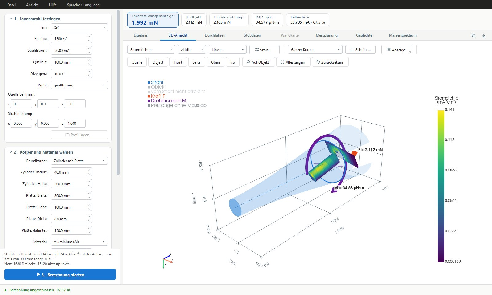
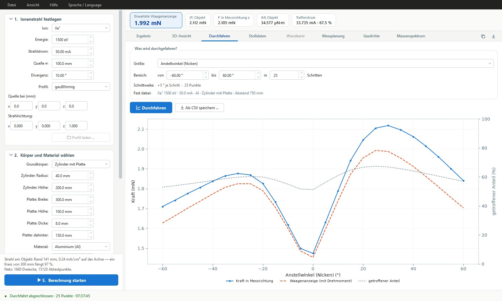
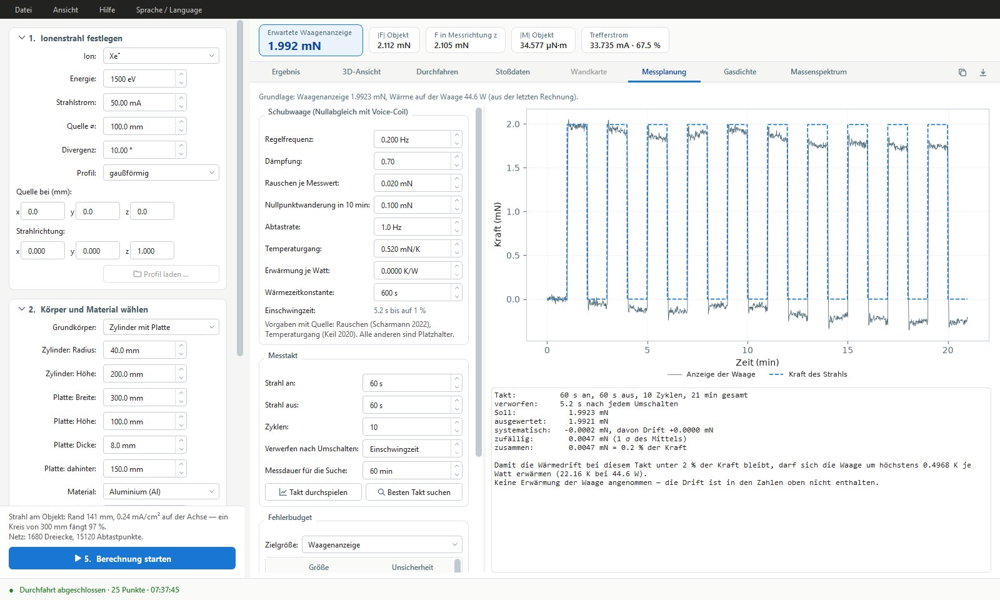
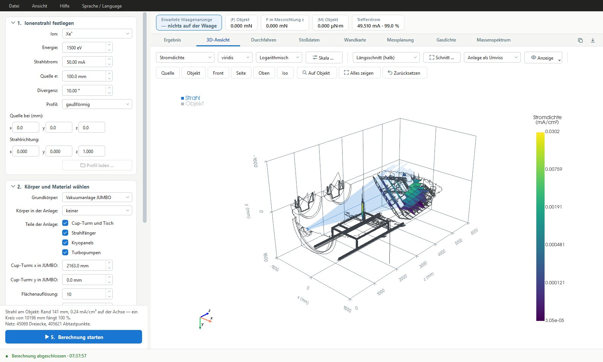
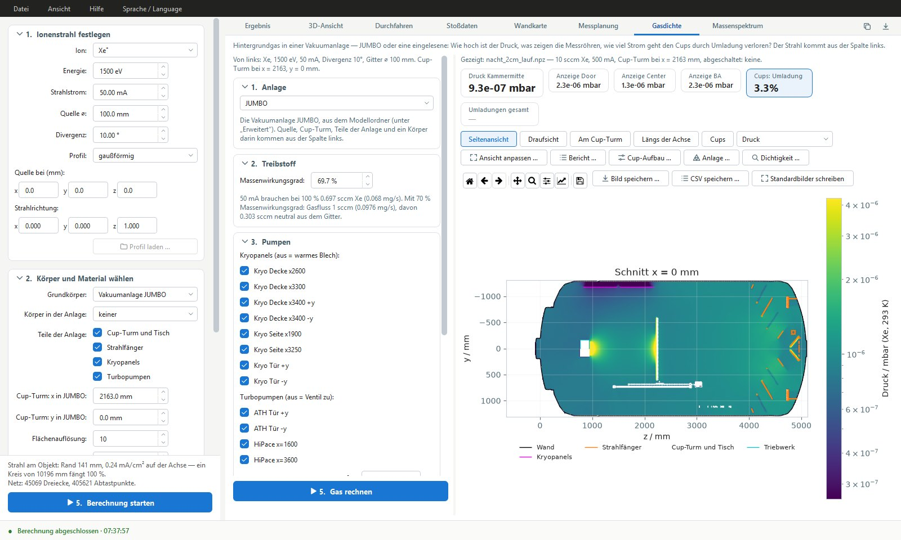
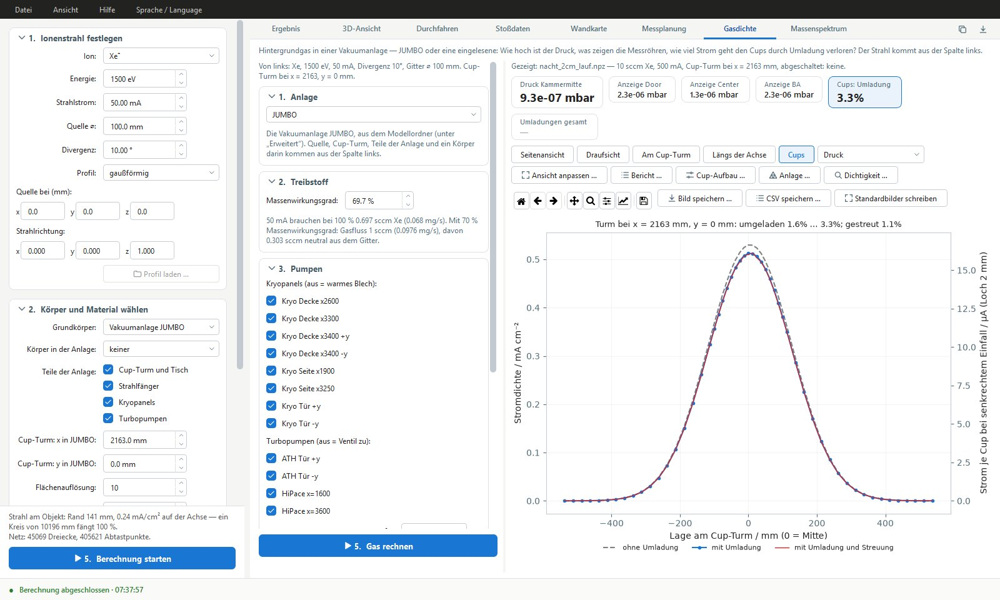
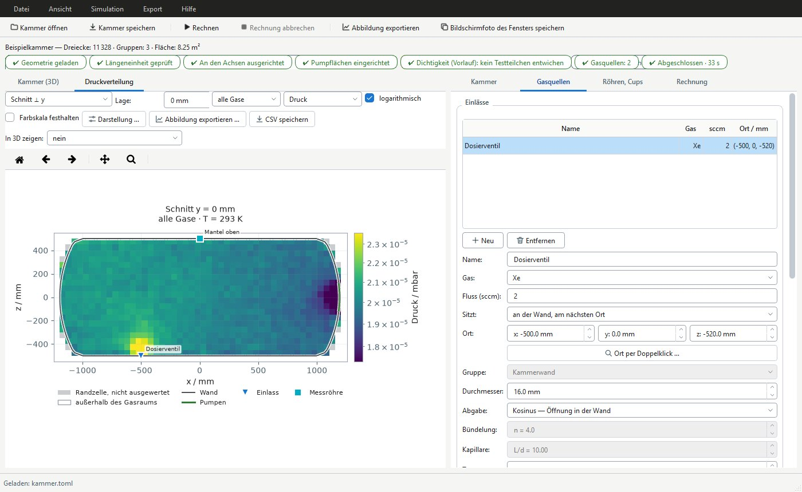
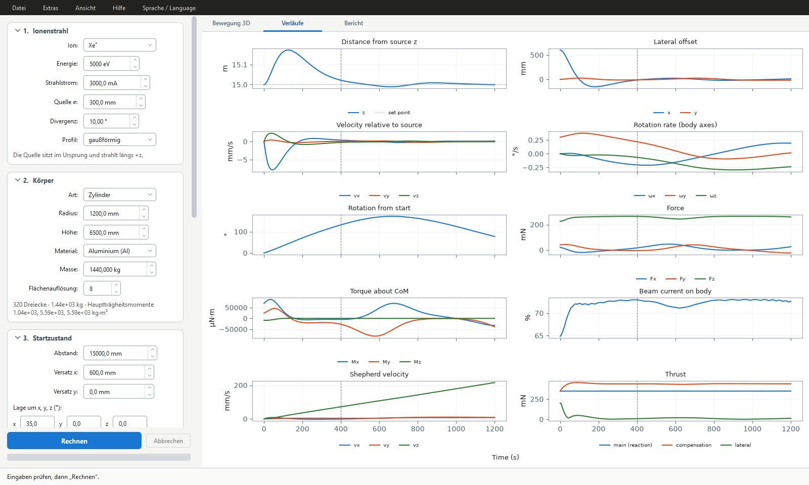
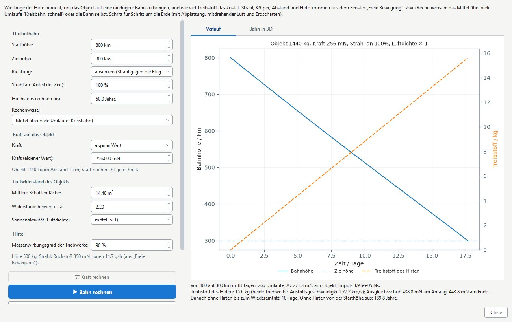

Wozu FORCETRACE?
Entstanden ist das Programm für Laborversuche zum Ion-Beam-Shepherd-Prinzip: Ein Ionenstrahl soll ein Objekt im Orbit – etwa ein Stück Weltraumschrott – berührungslos anschieben. Wie groß die übertragene Kraft ist, hängt von Form, Lage und Werkstoff des Körpers ab, von der Energie und Aufweitung des Strahls und davon, welche Teile des Körpers andere abschatten. Im Labor wird diese Kraft mit einer Schubwaage gemessen; deren Anzeige enthält zusätzlich das Drehmoment, Rauschen und Wärmedrift.
Der zweite Einsatzbereich ist die Strahldiagnostik in großen Vakuumanlagen wie JUMBO an der Justus-Liebig-Universität Gießen: Wie hoch ist der Druck bei laufendem Triebwerk, was zeigen die Messröhren, und wie viel Strom geht den Faraday-Cups durch Umladung und Streuung im Restgas verloren? Andere Anlagen lassen sich als Oberflächennetz einlesen.

Physikalische Modelle und Funktionen
Die Stoßphysik an der Oberfläche stammt aus vorab gerechneten Tabellen des Binary-Collision-Codes RustBCA. Strahl, Geometrie, Abschattung, Gastransport und Umladung rechnet FORCETRACE selbst.
- Impulsübertrag aus RustBCA – für jede Kombination aus Ion, Werkstoff, Energie und Einfallswinkel die Impulsbilanz aus rückgestreuten Ionen und zerstäubten Atomen, dazu Zerstäubungsausbeute und Wärmeanteil. Zwischen den Stützstellen wird interpoliert, außerhalb des gerechneten Bereichs nicht extrapoliert.
- Strahlmodell – Quellendurchmesser, Strom, Divergenz und Profil (gaußförmig, gleichmäßig oder gemessen aus Datei); die Verteilung am Ziel ist die Faltung aus Quellprofil und Winkelverteilung, mit gekrümmten Bahnen für Laborabstände.
- Kraft, Drehmoment, Wärme und Abtrag – Bilanz je Abtastpunkt eines Dreiecksnetzes; Grundkörper (Platte, Würfel, Zylinder, Kegel, Kugel, Blech) lassen sich zusammensetzen, Masse, Schwerpunkt und Trägheitstensor werden mitgerechnet.
- Abschattung – bei nicht konvexen und mehrteiligen Körpern wird jeder Abtastpunkt längs seiner Strahlbahn zur Quelle zurückverfolgt. Ohne Abschattung würde der Trefferstrom bei verwinkelten Körpern um 20 bis 30 % überschätzt.
- Abscheidung – Flug des zerstäubten Materials mit den Austrittsverteilungen aus RustBCA, Haftwahrscheinlichkeit und diffusem Rückprall; Ergebnis ist die Schichtrate je Fläche.
- Parameterstudien – Abstand, Versatz, Anstellwinkel, Strom, Divergenz oder Quellendurchmesser durchfahren, mit Kurven und CSV-Export.
- Messplanung an der Schubwaage – simulierter Messtakt mit Regelkreis, Rauschen, Nullpunktwanderung und Wärmedrift, ausgewertet wie im Labor; Fehlerbudget durch Variation der unsicheren Eingangsgrößen und Suche nach dem günstigsten Takt.
- Ion Beam Shepherd im Orbit – freie Bewegung eines Körpers im Strahl sowie die Absenkung der Umlaufbahn über Wochen, wahlweise gemittelt oder Schritt für Schritt mit Abplattung der Erde, Luftwiderstand und Erdschatten.
- Neutralgas in der Anlage – Testteilchen-Monte-Carlo in freier Molekularströmung mit Triebwerk, Turbopumpen und Kryoflächen; wahlweise Ausgasen und Leck. Gasstöße sind in der Kammersimulation zuschaltbar.
- Messröhren und Restgas – wahrer Druck und Anzeige von Kaltkathoden- und Bayard-Alpert-Röhren je Gas; Massenspektrum mit Isotopen, Doppelionisation und Bruchstücken.
- Umladung, Streuung und Faraday-Cups – Umladung längs der Strahlbahn aus der berechneten Gasdichte, elastische Streuung im ZBL-Potenzial und die geometrische Akzeptanz der Cup-Blenden; Ergebnis ist der Strom je Cup mit und ohne diese Verluste.
- Eigene Anlagen – Einlesen als Oberflächennetz (gmsh, STL) mit Beschreibung von Pumpen, Kryoflächen, Messröhren und Quelle; Prüfung der Hülle auf Lücken mit Testteilchen.
Kraftmessung im Labor
Beide Darstellungen beziehen sich auf den Aufbau aus dem ersten Bild: Zylinder mit Platte, 750 mm vor der Quelle, Xe⁺-Strahl mit 50 mA und 1500 eV.


Strahl und Gas in der Vakuumanlage
Die Anlage JUMBO ist aus den Konstruktionsdaten übernommen: Kammer, Strahlfänger, Cup-Turm, Kryopanels und Turbopumpen. Die Zahlen in den Bildern sind gerechnet, nicht gemessen.




Ion Beam Shepherd
Beim Ion-Beam-Shepherd-Prinzip richtet ein Hirten-Satellit sein Triebwerk auf ein Objekt und schiebt es mit dem Ionenstrahl an; ein zweites Triebwerk gleicht den Rückstoß aus. FORCETRACE rechnet, wie sich das Objekt dabei bewegt und dreht, ob der Hirte den Abstand halten kann und wie lange die Absenkung der Umlaufbahn dauert.


Verifikation
Ein eingebauter Selbsttest prüft über 300 Fälle mit vorher bekanntem Ergebnis. Die Stoßphysik selbst wird dabei nicht geprüft; sie stammt aus RustBCA.
- Geschlossene Formeln – Kraft auf eine Platte im vollen Strahl auf sechs Stellen, Drehmoment gegen einen von Hand gerechneten Hebelarm, Volumen, Schwerpunkt und Trägheit der Grundkörper.
- Erhaltungsgrößen – der Strahl verliert keinen Strom, der Wärmeeintrag bleibt unter der eingestrahlten Leistung, abgetragenes und abgeschiedenes Material stimmen in einer geschlossenen Kammer auf 0,01 % überein.
- Gasrechnung – in einer Beispielkammer mit bekannter Saugleistung liegt der gerechnete Druck innerhalb von 3 % am erwarteten Wert Q/S; der Umladeanteil im homogenen Gas folgt σ·n·L.
- Vergleich mit SPARTA – Gegenprobe der Gasrechnung mit dem DSMC-Code SPARTA an Testgeometrien, auch mit Gasstößen.
Zugang
FORCETRACE wird derzeit nicht öffentlich zum Download angeboten, sondern an Kooperationspartner weitergegeben. Bei Interesse am Programm, an einer gemeinsamen Rechnung oder an einer Zusammenarbeit freuen wir uns über eine Nachricht.
- Version
- 0.9.0
- Betriebssystem
- Windows 10/11, 64 Bit
- Sprache
- Deutsch und Englisch, umschaltbar
- Lieferumfang
- Installationsprogramm mit Stoßdaten, Beispielaufbauten, Handbuch, geführten Rundgängen und Diagnose
- Entwicklung
- Dr. Kristof Holste, Justus-Liebig-Universität Gießen
- Kontakt
- Kristof.Holste@physik.jlug.de
Nutzung und Lizenz. FORCETRACE ist für Forschung, Lehre und Ausbildung vorgesehen; jede andere Nutzung bedarf einer vorherigen Absprache. Maßgeblich sind die dem Installationspaket beigefügten Lizenzbedingungen.